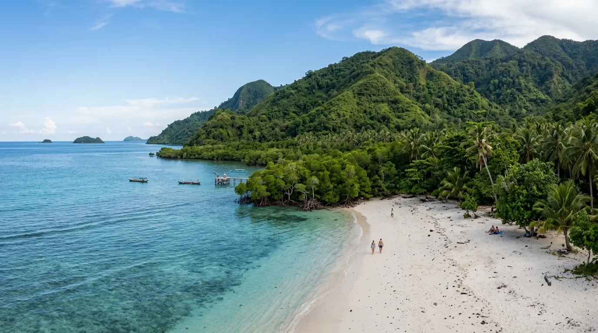

Di antara banyaknya pantai di Malang Selatan, Pantai Clungup punya keistimewaan yang tidak dimiliki pantai lain: statusnya sebagai kawasan wisata konservasi yang dikelola secara serius demi menjaga kelestarian alam. Dikelola di bawah Clungup Mangrove Conservation (CMC), pantai ini menyuguhkan pengalaman trekking menembus hutan mangrove sebelum akhirnya disambut hamparan pasir putih dan laut yang tenang. Bagi yang penasaran dengan konsep konservasi Clungup secara menyeluruh, mulai dari aturan kawasan, harga tiket, hingga tips berkunjung, simak ulasan lengkapnya berikut ini.
Pantai Clungup punya keistimewaan yang tidak dimiliki pantai lain: statusnya sebagai kawasan wisata konservasi yang dikelola secara serius demi menjaga kelestarian alam.
Sekilas Tentang Pantai Clungup
Pantai Clungup berada di kawasan Sendang Biru, Kecamatan Sumbermanjing Wetan, Kabupaten Malang, Jawa Timur. Dari pusat Kota Malang, rute yang bisa ditempuh melewati jalur Gadang-Turen-Sumbermanjing Wetan mengikuti petunjuk arah menuju Sendang Biru dan mencari papan nama CMC atau Clungup Mangrove Conservation, dengan waktu tempuh sekitar 2-2,5 jam menggunakan kendaraan pribadi tergantung kondisi lalu lintas. Perlu dicatat bahwa belum ada transportasi umum langsung menuju area konservasi ini, sehingga pengunjung wajib menggunakan kendaraan pribadi atau menyewa kendaraan selama di Malang.
Keunikan Pantai Clungup terletak pada lokasinya yang tersembunyi di balik perbukitan hijau, dengan akses menuju pantai yang harus melewati kawasan konservasi lengkap dengan jalur trekking yang dikembangkan sebagai bagian dari wisata edukasi. Pantai ini juga berfungsi sebagai pintu masuk menuju Pantai Gatra dan Pantai Tiga Warna yang berada dalam satu kawasan CMC, sehingga sering menjadi titik awal penjelajahan bagi wisatawan yang ingin mengunjungi ketiga pantai tersebut sekaligus.

Apa Itu Konservasi Clungup Mangrove Conservation?
Clungup Mangrove Conservation (CMC) adalah kawasan yang dikelola secara khusus untuk melestarikan ekosistem hutan mangrove sekaligus menjaga kebersihan pesisir Malang Selatan. Pantai Clungup dikelola oleh Clungup Mangrove Conservation Tiga Warna, dengan pasir putih bersih, ombak tenang, dan komitmen serius menjaga ekosistem pesisir. Kawasan ini bahkan mencakup hutan mangrove seluas 81 hektare yang harus dilewati pengunjung sebelum sampai ke bibir pantai.
Pengelolaan CMC melibatkan langsung masyarakat setempat, di mana seluruh fasilitas dikelola oleh komunitas lokal Bhakti Alam Sendang Biru. Sebagai bagian dari komitmen konservasi, pengelola secara rutin melakukan pembersihan pantai dan penanaman pohon bakau untuk menjaga kelestarian lingkungan, menjadikan Pantai Clungup sebagai salah satu contoh pengelolaan wisata berkelanjutan.
Salah satu aturan paling ketat di kawasan ini adalah sistem pemeriksaan barang bawaan. Petugas di pos pemeriksaan mencatat semua barang berpotensi menjadi sampah seperti botol plastik, kemasan makanan, tisu, masker, dan tas kresek, baik saat masuk maupun saat keluar kawasan, dan pengunjung yang meninggalkan sampah akan dikenakan denda. Kebijakan ini sejalan dengan aturan bahwa setiap pengunjung yang datang diwajibkan membawa pulang sampahnya masing-masing.
Trekking Hutan Mangrove Menuju Bibir Pantai
Pengalaman paling khas saat berkunjung ke Pantai Clungup adalah trekking ringan menembus hutan mangrove sebelum akhirnya tiba di bibir pantai. Setelah menyelesaikan proses registrasi dan pemeriksaan barang bawaan, pengunjung melanjutkan perjalanan dengan berjalan kaki menyusuri jalur setapak dan jembatan kayu yang membelah hutan mangrove. Jalur trekking dari pos registrasi menuju pantai berjarak sekitar 1-1,5 km, sudah tertata rapi dengan jalur yang jelas.
Trekking ini bukan sekadar akses fisik menuju pantai, melainkan juga dirancang sebagai bagian dari pengalaman wisata edukasi, di mana pengunjung bisa mengamati langsung ekosistem mangrove yang menjadi bagian penting dari upaya konservasi kawasan. Selama perjalanan, wisatawan juga dapat mempelajari berbagai jenis pohon bakau dan fungsinya dalam ekosistem pesisir, sehingga kunjungan ke Clungup memberi nilai tambah edukatif dibanding sekadar berwisata pantai biasa.
Aktivitas dan Fasilitas di Kawasan Clungup
Meski mengedepankan konsep konservasi, kawasan Clungup tetap menyediakan berbagai fasilitas dan aktivitas menarik bagi wisatawan. Fasilitas yang tersedia meliputi area parkir terpisah untuk motor dan mobil, pos registrasi, gazebo berteduh, toilet umum, mushola, jalur trekking mangrove yang sudah tertata, dan area camping di bawah naungan pohon hutan lindung.
Beberapa aktivitas dan layanan tambahan yang bisa dinikmati wisatawan antara lain:
Perlu diperhatikan bahwa ketersediaan perahu dan kano perlu dikonfirmasi terlebih dahulu ke pengelola saat reservasi, karena jumlah armada terbatas dan sering penuh terutama di akhir pekan.
Harga Tiket Masuk dan Aturan Kunjungan
Harga tiket masuk ke kawasan Pantai Clungup tergolong terjangkau, yaitu Rp10.000 per orang. Untuk biaya parkir, dikenakan Rp3.000 untuk motor dan Rp5.000 untuk mobil, dan bagi yang tidak ingin berjalan kaki dari area parkir mobil menuju pos 1, tersedia jasa ojek dengan tarif sekitar Rp5.000.
Sebagai gambaran total anggaran, estimasi biaya per orang untuk kunjungan satu hari ke kawasan Clungup berkisar Rp80.000-Rp180.000, tergantung aktivitas tambahan yang dipilih seperti pemandu, snorkeling, atau penyewaan perahu.
Beberapa aturan penting yang perlu diperhatikan sebelum berkunjung:
- Kawasan buka 24 jam, namun loket pemeriksaan hanya beroperasi pukul 06.00-13.30 WIB, dari hari Jumat hingga Rabu.
- Setiap hari Kamis, kawasan tutup total untuk pemulihan ekosistem, sebagai bentuk komitmen pengelola memberi waktu istirahat bagi alam dari aktivitas wisata.
- Jumlah pengunjung dibatasi maksimal 1.000 orang per hari sesuai daya dukung kawasan.
- Sistem reservasi wajib diberlakukan sejak 2025 dengan kuota maksimal yang sama.
- Bagi yang ingin melanjutkan ke Pantai Tiga Warna, reservasi wajib dilakukan melalui kontak resmi pengelola karena kuota dibatasi ketat.
Karena aturan dan tarif di kawasan ini dapat berubah mengikuti kebijakan pengelola CMC, sangat disarankan untuk mengecek informasi terbaru melalui media sosial resmi pengelola atau menghubungi langsung sebelum berangkat.
Rute Menuju Pantai Clungup
Rute menuju Pantai Clungup dari pusat Kota Malang dapat ditempuh dengan mengarahkan kendaraan menuju Turen, kemudian mengambil arah menuju Pantai Sendang Biru hingga menemukan petunjuk arah ke Pantai Clungup dan area parkir Clungup Mangrove Conservation. Bagi pengendara mobil, kendaraan wajib diparkir di area parkir utama, kemudian dilanjutkan dengan berjalan kaki menuju pos 1 CMC, atau menggunakan jasa ojek. Sementara pengendara motor dapat langsung melaju hingga area parkir yang lebih dekat dengan pos 1.
Kondisi jalan menuju lokasi sebagian besar sudah beraspal, meski ada beberapa ruas jalan yang masih berupa jalan berbatu atau tanah, terutama mendekati lokasi pantai. Karena itu, disarankan menggunakan kendaraan dalam kondisi prima dan berkendara dengan hati-hati, terutama pada ruas jalan yang belum sepenuhnya mulus.
Tips Berkunjung ke Pantai Clungup
- Datang sebelum pukul 13.30 WIB karena loket pemeriksaan hanya beroperasi hingga jam tersebut.
- Hindari berkunjung di hari Kamis, karena kawasan tutup total untuk pemulihan ekosistem.
- Bawa kembali seluruh sampah pribadi, mengingat sistem pemeriksaan barang bawaan diterapkan sangat ketat di pos masuk dan keluar.
- Gunakan jasa pemandu jika baru pertama kali berkunjung, agar perjalanan trekking dan penjelajahan kawasan lebih terarah.
- Reservasi terlebih dahulu, terutama jika berencana melanjutkan perjalanan ke Pantai Tiga Warna yang kuotanya dibatasi ketat.
- Siapkan fisik untuk trekking ringan sejauh 1-1,5 km melewati jalur setapak dan jembatan kayu di hutan mangrove.
- Konfirmasi ketersediaan kano atau perahu sejak awal, terutama jika berkunjung di akhir pekan.
Kesimpulan
Pantai Clungup adalah bukti nyata bahwa wisata alam dan pelestarian lingkungan bisa berjalan beriringan. Dengan konsep konservasi Clungup yang diterapkan secara konsisten oleh pengelola CMC, mulai dari pembatasan kuota pengunjung, hari tutup untuk pemulihan ekosistem, hingga sistem pemeriksaan sampah yang ketat, pantai ini menjadi contoh pengelolaan wisata berkelanjutan yang jarang ditemukan di destinasi lain. Ditambah dengan pengalaman trekking menembus Clungup mangrove yang edukatif serta panorama pantai yang masih asri, Pantai Clungup layak menjadi destinasi utama bagi wisatawan yang ingin menikmati alam sekaligus turut menjaga kelestariannya.